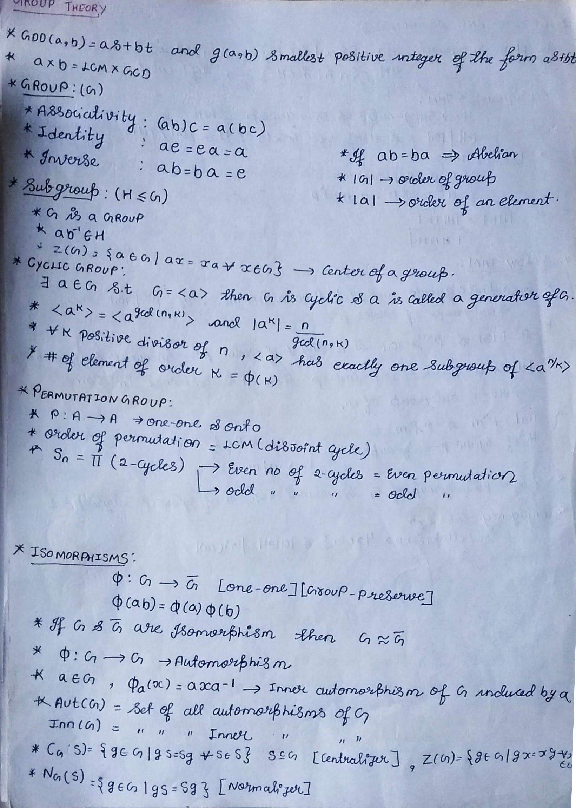

<html lang="en">
<head>

    <meta charset="utf-8">
    <meta http-equiv="X-UA-Compatible" content="IE=edge">
    <meta name="viewport" content="width=device-width, initial-scale=1">
    <meta name="description" content="">
    <meta name="author" content="">

    <title>PradeepBihani</title>

    <!-- Bootstrap Core CSS -->
    <link href="../../css/bootstrap.min.css" rel="stylesheet">

    <!-- Custom CSS -->
    <link href="../../css/simple-sidebar.css" rel="stylesheet">

    <!-- latex -->
    <script type="text/javascript" src="//cdn.mathjax.org/mathjax/latest/MathJax.js?config=TeX-AMS-MML_HTMLorMML">
    </script>

    <script type="text/x-mathjax-config">
         MathJax.Hub.Config({tex2jax: {inlineMath: [['$','$'], ['\\(','\\)']]}});


    </script>
    <!-- HTML5 Shim and Respond.js IE8 support of HTML5 elements and media queries -->
    <!-- WARNING: Respond.js doesn't work if you view the page via file:// -->
    <!--[if lt IE 9]>
    <script src="https://oss.maxcdn.com/libs/html5shiv/3.7.0/html5shiv.js"></script>
    <script src="https://oss.maxcdn.com/libs/respond.js/1.4.2/respond.min.js"></script>
    <![endif]-->

</head>

<body>


<!-- /#sidebar-wrapper -->

<!-- Page Content -->
<div id="page-content-wrapper">
    <div class="container-fluid">
        <div class="row">
            <div class="col-lg-12">
                <h1>Group Theory</h1>


                <ul>
                    <li></li>
                    <li></li>
                    <li></li>
                    <li></li>
                    <li></li>
                    <li></li>
                    <li>
                        <a href="http://sites.millersville.edu/bikenaga/abstract-algebra-2/automorphism-groups/automorphism-groups.pdf"
                           style="font-size:18px">Automorphism group</a></li>


                </ul>

                <h3>Nilpotent Number</h3>
                <p>
                    Characterizations of the set of positive integers $n$ such that every group of order $n$ is (i)
                    cyclic, (ii) abelian, or (iii) nilpotent.
                    <br/>
                    Say that a positive integer $n > 1$ is a **nilpotent number** if $n = p_1^{a_1} \cdots p_r^{a_r}$
                    (here the $p_i$'s are distinct prime numbers) and for all $1 \leq i,j \leq r$ and $1 \leq k \leq
                    a_i$, $p_i^k \not \equiv 1 \pmod{p_j}$. Also, let us say that $1$ is a nilpotent number.
                    <br/>
                    (So, for instance, any prime power is a nilpotent number. A product of two distinct primes $pq$ is a
                    nilpotent number unless $p \equiv 1 \pmod q$ or $q \equiv 1 \pmod p$.)
                    <br/>
                    Then, for $n \in \mathbb{Z}^+$:
                    <br/>
                <ul>
                    <li>(Pazderski, 1959) Every group of order $n$ is nilpotent iff $n$ is a nilpotent number.</li>
                    <li>(Dickson, 1905) Every group of order $n$ is abelian iff $n$ is a cubefree nilpotent number.</li>
                    <li>(Szele, 1947) Every group of order $n$ is cyclic iff $n$ is a squarefree nilpotent number. and n
                        is cyclic iff <b>$gcd(n,\phi(n))=1$</b></li>
                </ul>
                For example, if $n = pq$ is a product of distinct primes, then $n$ is squarefree, so every group of
                order $n$ is nilpotent iff every group of order $n$ is abelian iff every group of order $n$ is cyclic
                iff $p \not \equiv 1 \pmod q$ and $q \not \equiv 1 \pmod p$. In particular, every group of order $15$ is
                cyclic. <a href="http://math.uga.edu/~pete/nilpotentnumbers.pdf"
                           style="font-size:15px">Paper</a></li>

                </p>

                <p>
                <ul>
                    <li>Integral Domain in $R$</li>
                    <li>Every Ideal is a Principal Ideal Ring i.e { Every Ideal can be written as I = $\left \langle a
                        \right \rangle $ = { $ra$ | $r \in R $}
                    </li>
                </ul>
                </p>

                <h3>Principal Ideal Domain (PID)</h3>
                <p>
                <ul>
                    <li>Integral Domain in $R$</li>
                    <li>Every Ideal is a Principal Ideal Ring i.e { Every Ideal can be written as I = $\left \langle a
                        \right \rangle $ = { $ra$ | $r \in R $}
                    </li>
                </ul>
                </p>

                <h3>Factor Ring</h3>
                <p>
                    If all this seems vile and abstract, fear not: quotient rings are simple and quite fun to work with
                    in
                    practice. We’ve already seen one example: the integers mod n. Take R = Z and I = (n). Then
                    R/I = Z/nZ, and this is just the usual integers mod n where we do all thee addition and
                    multiplication
                    mod n.<br/>
                    Now let’s look at quotients of polynomial rings, as this is the fun bit. We’ll just do examples
                    until
                    you get the idea:.<br/>
                    Examples
                <ol>
                    <li>Take R = C[x], and I = (x − 2). We said before that the coset I acts as the zero element in
                        R/I, so x − 2 = 0. This is the same, using the addition rule for cosets, as saying that x = 2.
                        So
                        how does R/I look? Well, it’s just like the polynomial ring, except we’ve replaced x with 2 and
                        put bars over everything. Since 2 is already in C, we haven’t really added anything, so in fact
                        this
                        quotient ring is just like C..
                    </li>
                    </br>
                    <li> Take R = R[x], I = (x 2 + 1). In the quotient ring R[x]/(x2 + 1), we have cosets of
                        polynomials,
                        but with the rule that x 2 + 1 = 0, which we rewrite as x 2 = −1. So we think of elements of R/I
                        here as polynomials, but with the extra rule that x2 = −1. This is something we’ve seen before:
                        it’s basically the same as C, where we take R and adjoin a square root of −1, which in the
                        current
                        setting is being denoted by x..
                    </li>
                    </br>
                    <li> Let’s work backwards a bit. Say you want to work with a number system that’s like the rational
                        numbers, but also for some reason includes the element √
                        2. We can build this number system, which before we’ve called Q[ √ 2], using quotient rings.
                        Start with Q. We’ll need to adjoin a
                        variable (call it x), and then set this variable equal to √ 2. We cannot just quotient out by(x
                        − √ 2). because that’s not a polynomial with rational coefficients. So the correct quotientring
                        seems like it should be Q[x]/(x2 − 2). So the ring Q[x]/(x2 − 2) is like the rationals, butwith
                        an extra symbol x, which we know should behave like √2, namely x2 = 2. We can say thatQ[x]/(x2 −
                        2) ∼= Q[√2], where the latter is to be thought of as a subring of R (or C).4. Let R = R[x] and I
                        be the ideal generated by x3 − 1. Now I’m going to stop writing the barson top of everything,
                        for simplicity. So we think of elements of this ring as polynomials in x, butsubject to the
                        relation x3 = 1. What is (x4 − x2) times (x 2 + x + 1) in this ring? It doesn’t have degree 6,
                        like you’d expect in a normal polynomial ring. First we can simplify the first one to x − x 2
                        using the relation, and then multiply them out to give (x − x 2 )(x 2 + x + 1) = x 3 + x 2 + x −
                        x 4 − x 3 − x 2 = x − x 4 , and since x 3 = 1, x 4 = x, so this is just zero! So the first thing
                        we notice is that this ring has zero divisors - we just found two of them - x 4 − x 2 and x 2 +
                        x + 1. There is a more enlightening
                        way to see that their product is zero, however, by diligently factoring everything first: (x 4 −
                        x 2 )(x 2 + x + 1) = x 2 (x + 1)(x − 1)(x 2 + x + 1) = x 2 (x + 1)(x 3 − 1). 16 This shows that
                        their product is a multiple of x 3 −1, hence lies in I. So (x 4 −x 2 )(x 2 +x + 1) and x 3 − 1
                        are equivalent, hence the coset [(x 4 − x 2 )(x 2 + x + 1)] is the same as the coset [x 3 − 1],
                        which is just I, and we know that this functions as the zero element in the quotient ring.
                        Notice that the zerodivisor phenomenon basically happened because the generator for I factored:
                        x 3 −1 = (x −1)(x 2 +x + 1). That means right away that the two polynomials x −1 and x 2 +x + 1
                        are zerodivisors. We’ll come back to this when we discuss prime ideals. 5. Here’s a cool example
                        that shows how you can do calculus without limits. Start with the ring R[x], and adjoin a new
                        element , giving the ring R[x][] = R[x, ]. Finally, take the quotient by the ideal ( 2 ),
                        this forces  to satisfy the relation  2 = 0. Let R = R[x, ]/( 2 ) be this new ring. We can
                        compute derivatives in this ring as follows: pick a polynomial whose derivative you want to
                        compute, say f (x) = x 3 . Now look at f (x + ) = (x + ) 3 = x 3 + 3x 2  + 3x 2 +  3 = x 3
                        + 3x 2 . All the higher  terms disappear because of the relation  2 = 0, and the coefficient
                        of the remaining  term is just 3x 2 , the derivative! In a HW exercise you will be asked to
                        prove that in general, f (x + ) = f (x) + f 0 (x) If you work instead with the relation  n =
                        0, when you expand f (x +), you will get the first n + 1 terms of the Taylor series for f .
                    </li>
                </ol>
                </p>

            </div>
        </div>
    </div>
</div>
<!-- /#page-content-wrapper -->

<!-- /#wrapper -->

<!-- jQuery Version 1.11.0 -->
<script src="js/jquery-1.11.0.js"></script>

<!-- Bootstrap Core JavaScript -->
<script src="js/bootstrap.min.js"></script>

<!-- Menu Toggle Script -->
<script>
    $("#menu-toggle").click(function(e) {
        e.preventDefault();
        $("#wrapper").toggleClass("toggled");
    });


</script>


</body>
</html>
